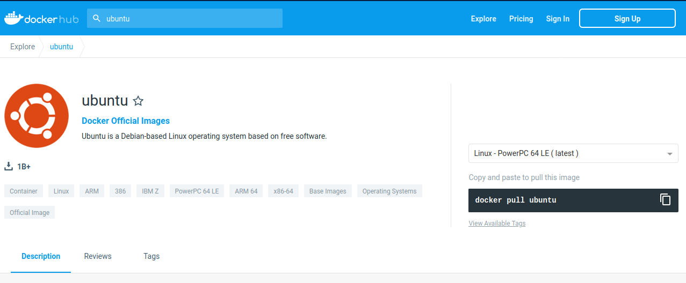

Docker
Introduction to Docker

What is Docker?
Platform for developing, shipping and running applications.
Infrastructure as application / code.
First version: 2013.
Company: originally dotCloud (2010), later named Docker.
Established Open Container Initiative.
As a software:
Docker Enterprise Edition.
There is an increasing number of alternative container technologies and providers. Many of them are actually based on software components originally from the Docker stack and they normally try to address some specific use cases or weakpoints. As a example, Singularity, that we introduce later in this couse, is focused in HPC environments. Another case, Podman, keeps a high functional compatibility with Docker but with a different focus on technology (not keeping a daemon) and permissions.
Docker components

Read-only templates.
Containers are run from them.
Images are not run.
Images have several layers.

Images versus containers
Image: A set of layers, read-only templates, inert.
An instance of an image is called a container.
When you start an image, you have a running container of this image. You can have many running containers of the same image.
“The image is the recipe, the container is the cake; you can make as many cakes as you like with a given recipe.”
Docker vocabulary
docker

Get help:
docker run --help
{kind=link}
Using existing images
Explore Docker hub
Images can be stored locally or shared in a registry.
Docker hub is the main public registry for Docker images.
Let’s search the keyword ubuntu:
{kind=link}
docker pull: import image
get latest image / latest release
docker pull ubuntu
{kind=link}
choose the version of Ubuntu you are fetching: check the different tags
{kind=link}
docker pull ubuntu:18.04
Biocontainers
Specific directory of Bioinformatics related entries
Entries in Docker hub and/or Quay.io (RedHat registry)
Normally created from Bioconda
Example: FastQC
https://biocontainers.pro/#/tools/fastqc
docker pull biocontainers/fastqc:v0.11.9_cv7
docker images: list images
docker images
{kind=link}
Each image has a unique IMAGE ID.
docker run: run image, i.e. start a container
Now we want to use what is inside the image.
docker run creates a fresh container (active instance of the image) from a Docker (static) image, and runs it.
The format is:
docker run image:tag command
docker run ubuntu:18.04 /bin/ls
{kind=link}
Now execute ls in your current working directory: is the result the same?
You can execute any program/command that is stored inside the image:
docker run ubuntu:18.04 /bin/whoami
docker run ubuntu:18.04 cat /etc/issue
You can either execute programs in the image from the command line (see above) or execute a container interactively, i.e. “enter” the container.
docker run -it ubuntu:18.04 /bin/bash
Run container as daemon (in background)
docker run --detach ubuntu:18.04 tail -f /dev/null
Run container as daemon (in background) with a given name
docker run --detach --name myubuntu ubuntu:18.04 tail -f /dev/null
docker ps: check containers status
List running containers:
docker ps
List all containers (whether they are running or not):
docker ps -a
Each container has a unique ID.
docker exec: execute process in running container
docker exec myubuntu uname -a
Interactively
docker exec -it myubuntu /bin/bash
docker stop, start, restart: actions on container
Stop a running container:
docker stop myubuntu
docker ps -a
Start a stopped container (does NOT create a new one):
docker start myubuntu
docker ps -a
Restart a running container:
docker restart myubuntu
docker ps -a
Run with restart enabled
docker run --restart=unless-stopped --detach --name myubuntu2 ubuntu:18.04 tail -f /dev/null
Restart policies: no (default), always, on-failure, unless-stopped
Update restart policy
docker update --restart unless-stopped myubuntu
docker rm, docker rmi: clean up!
docker rm myubuntu
docker rm -f myubuntu
docker rmi ubuntu:18.04
Major clean
Check used space
docker system df
Remove unused containers (and others) - DO WITH CARE
docker system prune
Remove ALL non-running containers, images, etc. - DO WITH MUCH MORE CARE!!!
docker system prune -a
Exercises
1 - Alpine
Search and pull the alpine image (tag 3.12) - it is an official build.
Can you run a container from this image and make it print a “hello world” message?
Now run a container interactively from the same image.
Run whoami in the container.
Exit the container and run whoami on the host machine: do you get the same output?
Restart the container you just exited:
Is it now running?
Make the container execute the command ls.
Stop the container.
Remove the alpine image and all its containers (running or stopped).
Suggested solution
# Search and pull the alpine image (tag 3.12) - it is an official build.
docker search alpine --filter is-official=true
docker pull alpine:3.12
# Can you run a container from this image and make it print a “hello world” message?
docker run alpine:3.12 echo "hello world"
# Now run a container **interactively** from the same image.
docker run -ti alpine:3.12
# Run `whoami`
whoami
# Exit the container.
exit
# Restart the container you just exited: is it now running?
docker restart CONTAINER_ID # find it with `docker ps -a`
# Make the container execute the command `ls`
docker exec CONTAINER_ID ls
# Stop the container
docker stop CONTAINER_ID
# Remove the alpine image and all its containers (running or stopped)
docker rmi alpine:3.12
docker rm CONTAINER_ID # check all containers with `docker ps -a`
2 - Imagemagick
Pull the imagemagick image that is official and that has the highest number of stars
Check the version of the convert command.
Start a container interactively.
Inside the container: download this png image
Convert it to .jpg using the convert command of imagemagick (format; convert image.png image.jpg).
Exit the container.
Copy the jpg image back from the stopped container! Try new command docker cp.
Suggested solution
# Pull image
docker pull acleancoder/imagemagick-full
# Check version of `convert`
docker run acleancoder/imagemagick-full convert --version
# Start interactive container
docker run -it acleancoder/imagemagick-full
# fetch png image
> wget https://pbs.twimg.com/profile_images/1273307847103635465/lfVWBmiW_400x400.png
# convert to jpg
> convert lfVWBmiW_400x400.png myimage.jpg
# exit container
# fetch container ID with `ps -a` and use `docker cp` to copy jpg file from the stopped container to the host
docker cp *CONTAINER_ID*:/myimage.jpg .
Volumes
Docker containers are fully isolated. It is necessary to mount volumes in order to handle input/output files.
Syntax: –volume/-v host:container
mkdir datatest
touch datatest/test
docker run --detach --volume $(pwd)/datatest:/scratch --name fastqc_container biocontainers/fastqc:v0.11.9_cv7 tail -f /dev/null
docker exec -ti fastqc_container /bin/bash
> ls -l /scratch
> exit
Ports
The same as with volumes, but with ports, to access Internet services.
Syntax: –publish/-p host:container
docker run --detach --name webserver nginx
curl localhost:80
docker exec webserver curl localhost:80
docker rm -f webserver
docker run --detach --name webserver --publish 80:80 nginx
curl localhost:80
docker rm -f webserver
docker run --detach --name webserver -p 8080:80 nginx
curl localhost:80
curl localhost:8080
docker exec webserver curl localhost:80
docker exec webserver curl localhost:8080
docker rm -f webserver
Volume exercises
Copy the 2 fastq files from available datasets in Github repository and place them in mounted directory
Run fastqc interactively (inside container):
`fastqc /scratch/*.gz`Run fastqc outside the container
docker run –user
It is possible to run certain containers with a specific user, appending `run --user`.
A convenient command would be:
docker run --user $(id -u):$(id -g) --detach --volume $(pwd)/datatest:/scratch --name user_test biocontainers/fastqc:v0.11.9_cv7 touch /scratch/userfile